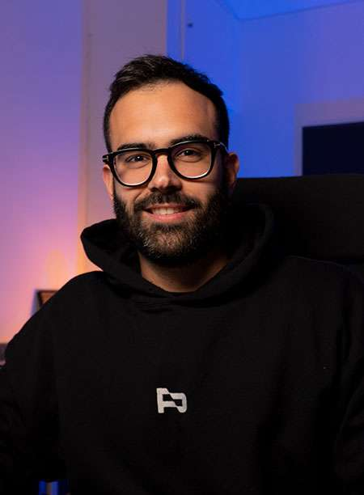

¿La mejoramos juntos?
Empezamos con una llamada gratis de 15 min por Zoom: escuchamos tu track y te digo qué lo está frenando, sin compromiso. Si encaja, en la sesión 1:1 (250 €) lo abrimos juntos y lo arreglamos en directo — y te enseño el porqué de cada decisión.
Cómo funciona
Reserva tu llamada gratis de 15 min
Eliges hueco en mi calendario y me dejas el enlace de tu track. Antes de la llamada lo escucho para llegar con los deberes hechos. Es gratis y sin compromiso.
Hablamos — y te digo si te puedo ayudar
En esos 15 min por Zoom repasamos qué le está frenando a tu track y si la auditoría 1:1 te encaja de verdad. Si veo que no es para ti ahora mismo, te lo digo claro — sin venderte nada.
La sesión 1:1 — 60 min, tu proyecto, en directo (250 €)
Si encajamos, reservas la sesión completa. Abrimos tu proyecto en Zoom, te doy el análisis detallado y lo arreglamos juntos en directo. Al acabar te llevas el proyecto con los cambios y la sesión grabada. Son 100% para ti.
Para ti si...
- Ya has subido un análisis a Mentotrack y sabes qué te dice el motor, pero quieres ese empujón humano para cerrar el track.
- Produces hace tiempo y sientes que algo no cuadra — pero no consigues poner el dedo en qué.
- Prefieres aprender viendo a alguien trabajar tu track antes que ver 60 tutoriales y consejos en redes.
- Buscas no repetir los mismos errores que te han mantenido bloqueando durante tanto tiempo.
No es para ti si...
- Esperas que te entregue un master listo para sello sin más. Esto es trabajo colaborativo, no una ghost producción.
- Nunca has producido. Esto presupone que manejas tu DAW — para empezar de cero hace falta empezar por las bases, no consultoría.
- Buscas que te regale el oído. Si tu track tiene problemas reales te los voy a decir sin maquillar.
- Tu track no es música electrónica de club. Mentotrack y mi experiencia se basan en tech house, house, techno, melodic, trance y derivados.
Quién soy

Alex González
Productor musical · fundador de Producción Online
Soy productor musical y fundador de Producción Online desde hace más de 10 años. Por el camino hemos ayudado a más de 6.000 productores a mejorar su sonido y sus flujos de trabajo en el estudio.
Puedes verme producir (y explicar) en más de 500 vídeos en YouTube — para que sepas cómo trabajo antes de reservar.
Empieza por una llamada gratis
15 minutos por Zoom. Sin compromiso.
Escuchamos tu track juntos y te digo qué creo que lo está frenando. Sales con 1-2 cosas claras que mejorar — y si la auditoría 1:1 (250 €) te encaja, te lo digo; si no, también.
Reserva tu llamada gratis →Al reservar te pediré el enlace de tu track para escucharlo antes de hablar.
Preguntas frecuentes
¿La llamada de 15 min tiene algún coste?
Ninguno. La llamada es gratis y sin compromiso — sirve para conocernos, que escuche tu track y decidir juntos si la sesión 1:1 te encaja. El pago de la sesión (250 €) solo entra en juego si decides reservarla después de hablar.
¿Y si mi track es muy malo todavía?
Hay un punto de partida útil en casi cualquier track. Y para eso está la llamada gratis: si veo que no hay base sobre la que trabajar (o estás en una fase muy temprana), te lo digo claro en esos 15 min — sin que hayas pagado nada. Mejor "vuelve en un tiempo con más material" que cobrarte por no poder ayudarte.
¿Qué DAW usas?
Trabajo con Ableton Live. Si tú usas otro podemos trabajar juntos también. La única diferencia es que tendrás que aplicar por ti mismo los cambios sugeridos en la sesión y te servirá para asentar mejor los conocimientos. Pero no te preocupes, podrás seguir la sesión grabada paso a paso.
¿Vamos a tocar mi proyecto o lo abres en el tuyo?
Depende de lo que necesites y de si me pasas el .als / .flp. Si me lo mandas, trabajamos directamente sobre tu proyecto y al final te lo devuelvo modificado. Si solo me pasas el bounce, hago demos en mi DAW para enseñarte la dirección y tú la reproduces en el tuyo.
¿Grabamos la sesión?
Sí. Te mando el vídeo en las 24 h siguientes para que puedas repasarlo. Es parte del valor: muchas cosas se entienden de verdad la segunda vez que las ves.
¿Puedo reservar varias sesiones seguidas?
No te lo recomiendo. Tras una sesión sales con 3-5 cosas concretas que aplicar — necesitas tiempo para practicarlas y entender de verdad. Mejor sesión, aplicar 2-3 semanas, y volver con dudas o el siguiente track.
¿Hay descuentos por paquete?
No, pero en caso de que necesites un acompañamiento de más duración, te recomiendo mirarte La Mentoría de Producción Online.
¿Empezamos?
15 min gratis pueden ahorrarte meses dando palos de ciego. Sin compromiso.
Reserva tu llamada gratis →